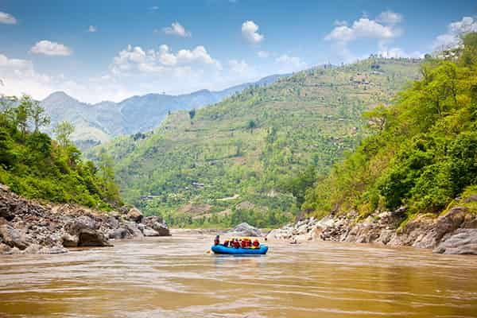

The term "whitewater" refers to the frothy, fast-moving water that forms as the river flows over obstacles like rocks and drops in elevation. These rapids are classified by difficulty from Class I (easy) to Class V (extremely difficult), providing options for all skill levels. whitewater rafting has grown from humble beginnings to become a popular pursuit among adventure enthusiasts worldwide.

White Water Rafting
History
The origins of whitewater rafting trace back to the mid-19th century when rubber rafts were first used by military expeditions to navigate uncharted waters. However, it wasn't until the 1970s that it became popular as a recreational sport. Since then, whitewater rafting has evolved with advancements in safety and equipment, making it accessible to a broader audience.

The origins of whitewater rafting trace back to the mid-19th century when rubber rafts were first used by military expeditions to navigate uncharted waters. However, it wasn't until the 1970s that it became popular as a recreational sport. Since then, whitewater rafting has evolved with advancements in safety and equipment, making it accessible to a broader audience.